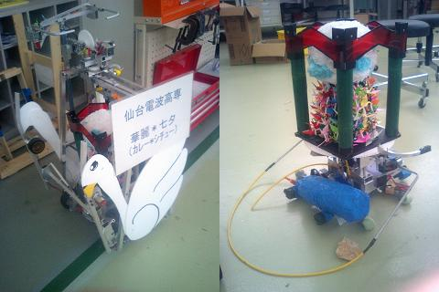
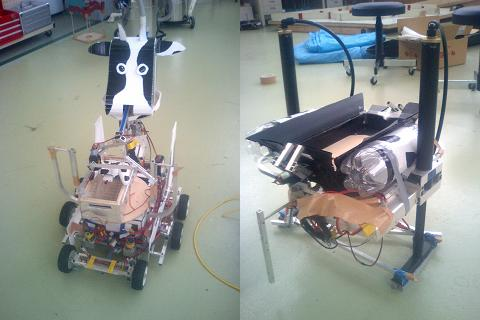

仙台電波高専Aチーム
華麗＊七夕
06年度、「華麗＊七夕」（カレー・シチュー）は名の通り七夕のオブジェを運ぶマシンです。
外装にも七夕伝説で「橋渡し」の役割をする白鳥が飾られています。
オブジェを落さないようブランコ方の機構（通称：おかもち機構）
を取り付けましたが重心が高くなり旋回に難有りでした。
全ての障害物を越えゴールする機能は持っているのですが、大会本番ではシーソーの部分でタイヤが外れてしまい、
一回戦で敗退してしまいました。
しかし、その後にあった、秋田大会
（全国大会にいけなかった高専から1チームずつ出場する総当りの試合。秋田県電子工業振興協議会創立20周年記念）
では見事優勝を収めることができました。
東北大会でのタイヤのことが悔やまれるマシンです。
前日のメンテナンスは見落としがあるかもしれません、気をつけましょう。

仙台電波高専Bチーム
舌駆
東北大会準優勝したマシンです。
マシン名「舌駆」（タンク）はオブジェが牛タンなのに本体はホルスタインなロボットです。
本体下部に前後にスライドする二本の足が入っており、
それらを伸び縮みさせることで堀越えを可能にしています。
堀越えは、全自動化させる予定でした。
しかし、本番直前に煙を出し制御不能に陥ったため急遽手動での操縦となりました。
操縦の大関さんの話：操縦で苦労した点は、掘り越えやシーソーでオブジェを落とさないように、
ゆっくり（加速度をかけずに）動かすところが難しかったです。
オブジェトレーには一軸の傾きを検知して、マイコンで水平制御しました。

最後に
七夕のオブジェの折り鶴と短冊の作成にはオープンスクールに来てくださった中学生とそのご家族の皆様に協力していただきました。
牛タンのオブジェには牛タン振興会様から本物の牛タンを真空パックに入れて提供していただき、大会後にはおいしくいただきました。
本当にありがとうございました。